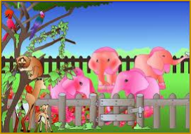
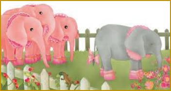
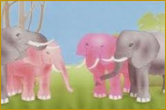

Lee el siguiente texto con mucha atención. Luego, contesta las preguntas.
Había una vez en el país de los elefantes, una manada en que las elefantas eran suaves como el terciopelo, tenían los ojos grandes y brillantes, y la piel de color rosa caramelo. Todo esto se debía a que, desde el mismo día de su nacimiento, las elefantas sólo comían anémonas y peonias. Y no era que les gustaran estas flores: las anémonas y todavía peor las peonias tienen un sabor malísimo. Pero eso sí, dan una piel suave y rosada y unos ojos grandes y brillantes.

Las anémonas y las peonias crecían en un jardincillo vallado. Las elefantitas vivían allí y se pasaban el día jugando entre ellas y comiendo flores. “Pequeñas”, decían sus papás, “tienen que comerse todas las peonias y no dejar ni sola anémona, o no se harán tan suaves como sus mamás, ni tendrán los ojos grandes y brillantes, y, cuando sean mayores, ningún guapo elefante querrá casarse con ustedes”.
Para volverse más rosas, las elefantitas llevaban zapatitos color de rosa, cuellos color de rosa y grandes lazos color de rosa en la punta del rabo.
Desde su jardincito vallado, las elefantitas veían a sus hermanos y a sus primos, todos de un hermoso color gris elefante, que jugaban por la sabana, comían hierba verde, se duchaban en el río, se revolcaban en el lodo y hacían la siesta debajo de los árboles.
Sólo Margarita, entre todas las pequeñas elefantas, no se volvía ni un poquito rosa, por más anémonas y peonias que comiera. Esto ponía muy triste a su mamá elefanta y hacía enfadar a papá elefante.

“Veamos, Margarita”, le decían, “¿Por qué sigues con ese horrible color gris, que sienta tan mal a una elefantita? ¿Es que no te esfuerzas? ¿Es que eres una niña rebelde? ¡Mucho cuidado, Margarita, porque si sigues así no llegarás a ser nunca una hermosa elefanta!”
Y Margarita, cada vez más gris, mordisqueaba unas cuantas anémonas y unas pocas peonias para que sus papás estuvieran contentos. Pero pasó el tiempo, y Margarita no se volvió de color de rosa. Su papá y su mamá perdieron poco a poco la esperanza de verla convertida en una elefanta guapa y suave, de ojos grandes y brillantes. Y decidieron dejarla en paz.

Y un buen día, Margarita, feliz, salió del jardincito vallado. Se quitó los zapatitos, el cuello y el lazo color de rosa. Y se fue a jugar sobre la hierba alta, entre los árboles de frutos exquisitos y en los charcos de barro. Las otras elefantitas la miraban desde su jardín. El primer día, aterradas. El segundo día, con desaprobación. El tercer día, perplejas. Y el cuarto día, muertas de envidia.
Al quinto día, las elefantitas más valientes empezaron a salir una tras otra del vallado. Y los zapatitos, los cuellos y los bonitos lazos rosas quedaron entre las peonias y las anémonas. Después de haber jugado en la hierba, de haber probado los riquísimos frutos y de haber comido a la sombra de los grandes árboles, ni una sola elefantita quiso volver nunca jamás a llevar zapatitos, ni a comer peonias o anémonas, ni a vivir dentro de un jardín vallado. Y desde aquel entonces, es muy difícil saber viendo jugar a los pequeños elefantes de la manada, cuáles son elefantes y cuáles son elefantas, ¡Se parecen tanto!
Turin, A; Bosnia, N. (1975). Rosa Caramelo. Kalandraka editorial. Madrid, España.